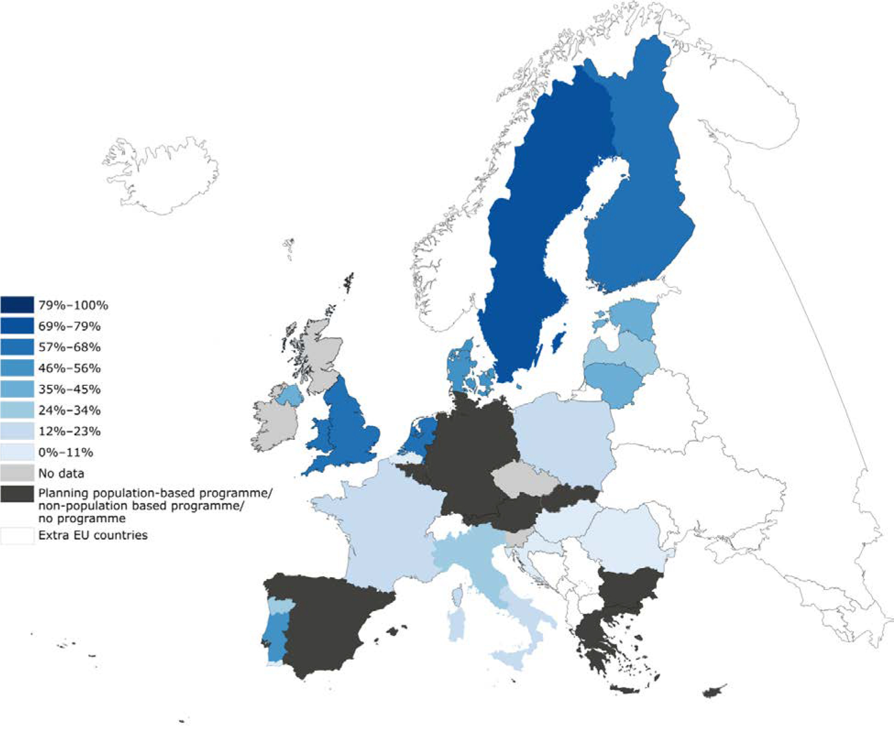

Evaluación y monitorización del programa
Un programa de cribado del cáncer debe diseñarse de forma que facilite la comprobación de su calidad y eficacia y permita su evaluación.
Para determinar la garantía de calidad de un programa de cribado, se necesitan evaluaciones continuas. Los resultados de los indicadores de cribado son fundamentales para monitorizar el proceso de cribado e identificar y reaccionar ante posibles problemas en una fase temprana.
La evaluación a largo plazo de la eficacia del programa de cribado también es esencial en el impacto de la carga de la enfermedad en la población, es decir, en la reducción de la incidencia y la mortalidad del cáncer de cuello uterino.
Mediante la publicación de evaluaciones periódicas de los resultados, los responsables de la toma de decisiones y el personal pueden saber cómo funciona el programa de cribado.
IDEA CLAVE:
La disponibilidad y el uso amplio de indicadores de evaluación estandarizados, como los recomendados en las directrices europeas [5], facilita la gestión de la calidad y ayuda a reconocer aquellos programas y enfoques que son más exitosos. También mejora la comparabilidad de los datos y fomenta el intercambio internacional de información y experiencias entre los programas, lo que es imprescindible para la mejora continua de la calidad.
Para evaluar correctamente e interpretar un programa de cribado, es necesario tener en cuenta varios sesgos. En el Módulo 1 se puede encontrar más información sobre estos sesgos.
Hay dos requisitos principales para monitorizar la implementación y evaluar el impacto de un programa de cribado:
Un protocolo de cribado detallado, de carácter obligatorio, que incluya el intervalo de cribado recomendado, las poblaciones diana y los grupos de edad específicos.
Un sistema de información adecuado que apoye el programa de cribado, supervise y evalúe cada paso del proceso de cribado.
La realización de un programa de cribado debe evaluarse respecto a una lista de indicadores clave de implementación.
Deben cumplirse los requisitos del sistema de información detallados en el apartado 8.4. De lo contrario, no se podrán estimar algunos indicadores. El número de indicadores que pueden calcularse dependerá en gran medida del diseño del sistema, de la información estructurada disponible y de la viabilidad de la vinculación de datos entre registros.
En general, se pueden distinguir tres grupos de indicadores: la intensidad del cribado, el rendimiento de las pruebas de cribado y la evaluación del diagnóstico y el tratamiento.
Los indicadores clave de la intensidad del cribado incluyen la cobertura de la población diana mediante la invitación y las pruebas de cribado, el cumplimiento de la invitación, el consumo de las pruebas y la incidencia del cáncer de cuello uterino invasivo en las mujeres no sometidas a cribado o mal cribadas en un intervalo determinado.
La cobertura es el porcentaje de mujeres entre las elegibles para el cribado en la población diana a las que se les convoca o se someten al proceso de cribado al menos una vez durante el intervalo de cribado recomendado estándar (normalmente 3 o 5 años).
La cobertura debe calcularse para todo el grupo de edad diana definido por la política de cribado nacional o regional. Este es el indicador más calculado y, por tanto, se utiliza para comparar programas de cribado. En la figura 4 se muestra la cobertura de diferentes programas de cribado de la Unión Europea en un intervalo de edad específico, excluyendo el cribado oportunista e incluyendo solo mujeres invitadas y cribadas.
FIGURA 4 Programas de cribado del cáncer de cuello uterino en la Unión Europea: cobertura en un intervalo de edad específico. Fuente: [11]

Un programa de cribado organizado y basado en la población requiere un sistema de información con una buena vinculación a los datos censales actualizados para poder invitar y hacer un seguimiento de la población diana, así como calcular adecuadamente la cobertura por invitación y la participación de las personas invitadas.
El cumplimiento del cribado con invitación es el porcentaje de mujeres invitadas en un período determinado que se sometieron a una prueba de cribado. Este indicador es relevante en los programas de cribado organizado y aporta una medida de la eficacia del envío de las invitaciones.
El consumo de la prueba es el porcentaje de pruebas de cribado realizadas en un período determinado en la población diana (no incluye pruebas repetidas, p. ej., después de una citología insatisfactoria o como seguimiento). Un exceso de pruebas de cribado por mujer cribada aumenta los costes económicos y humanos, obteniendo una reducción marginal de la incidencia y la mortalidad.
La incidencia del cáncer de cuello uterino invasivo es el número de cánceres invasivos detectados en mujeres no sometidas a cribado (incluidas las mujeres que nunca se sometieron a cribado y las mujeres que se sometieron a cribado a intervalos más largos) en un periodo determinado por el número de años-persona de mujeres no sometidas a cribado. Ofrece una medida directa de la carga de enfermedad resultante de una cobertura no óptima.